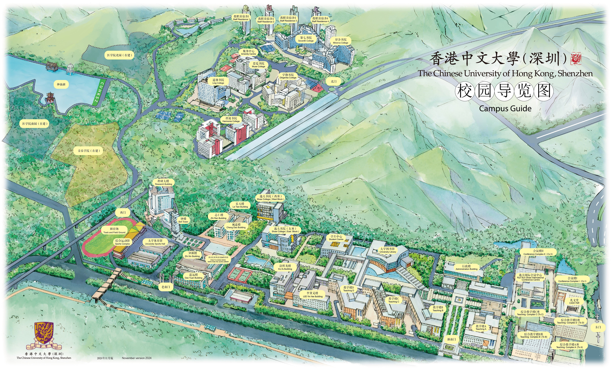

Contact Us
Contact Information
Address:
The Chinese University of Hong Kong, Shenzhen
School of Science and Engineering, T-lab
2001 Longxiang Boulevard, Longgang District, Shenzhen, Guangdong, China
Email: tangxiaoying@cuhk.edu.cn
